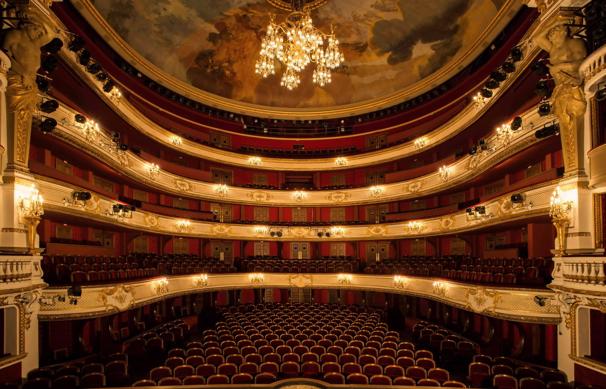
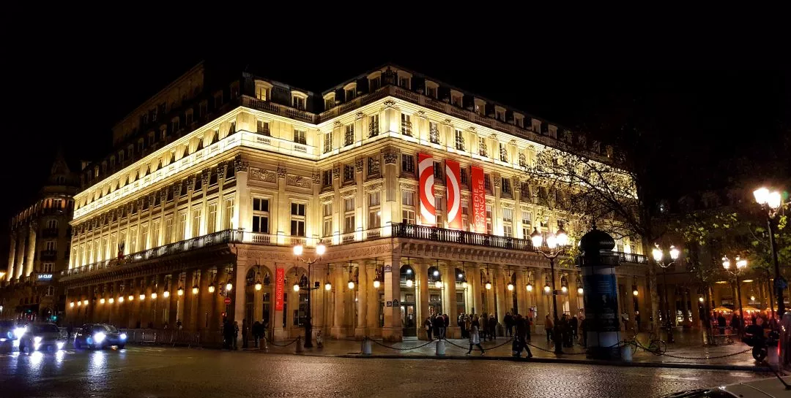
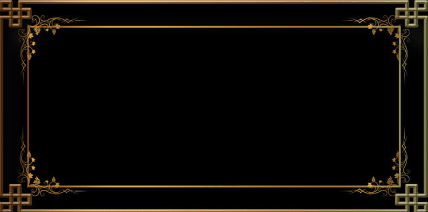
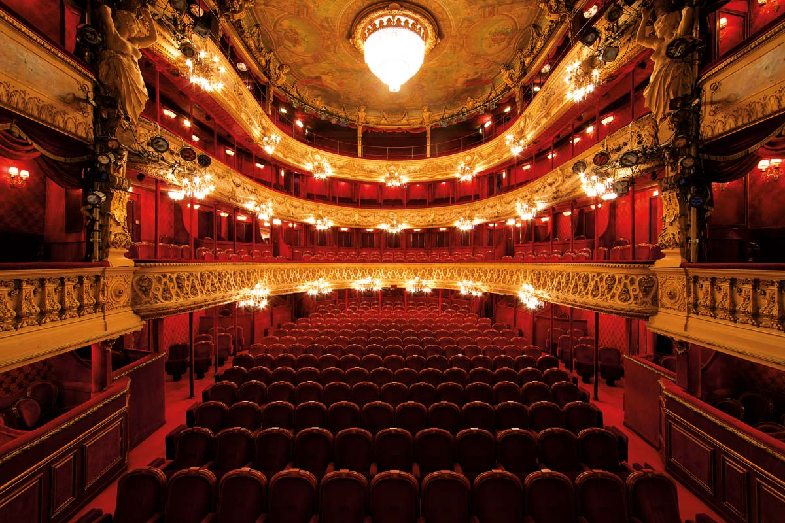
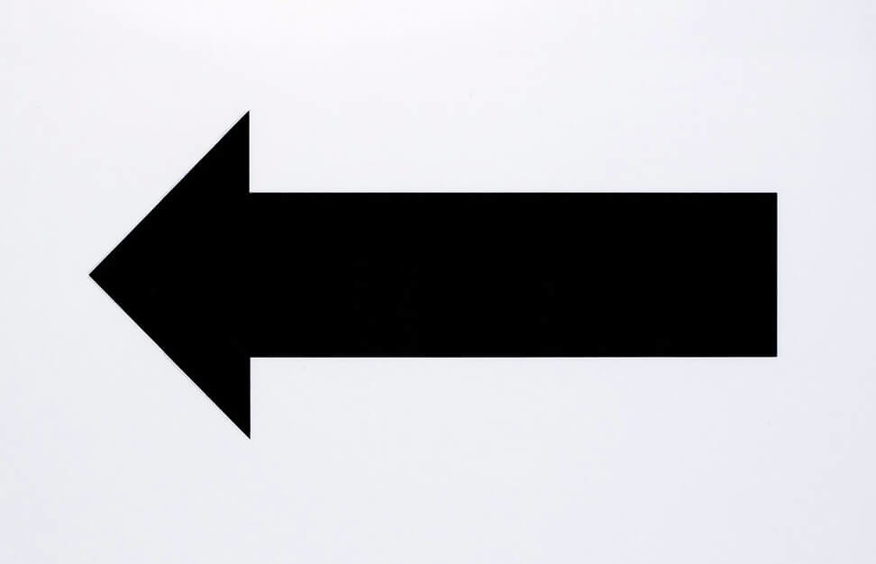
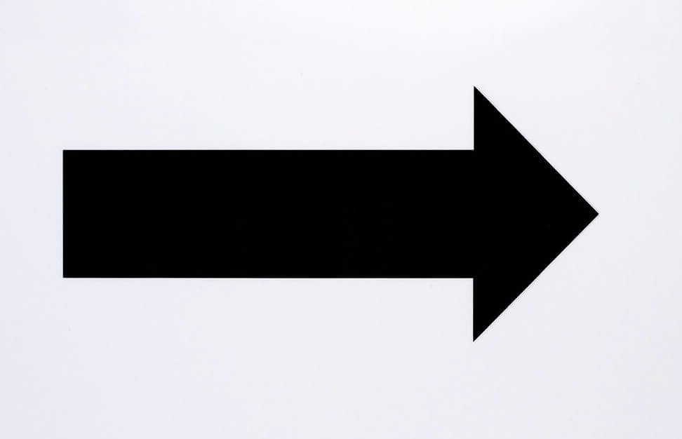

Disapositive 4



Nom du théatre : la Comédie-Française.
Date de construction : 1680.
Construit par : Victor Louis.
description : description : La Comédie-Française ou
Théâtre-Français est une institution culturelle française
fondée en 1680.
C'est le seul théâtre national en France
disposant d'une troupe permanente de comédiens, la Troupe
des Comédiens-Français. Bien que mort depuis sept ans
quand la troupe a été créée, Molière est considéré comme le
« patron » de l'institution, surnommée la « Maison de
Molière ». Son emblème est une ruche avec des abeilles,
à l'image d'une institution foisonnante.

Nom du théatre : Palais-Cardinal / Palais-Royal.
Date de construction : 1628.
Construit par : Richelieu.
description : C'est un grand théatre parisien ou la troupe
de Molière s'y est produite pendant une dizaine d'années
avant d'être chassé.Il a servit de résidence à la régente
Anne d'Autriche (1601-1666) et au jeune Louis
XIV enfant pendant les troubles de la Fronde et devient
le Palais-Royal.

